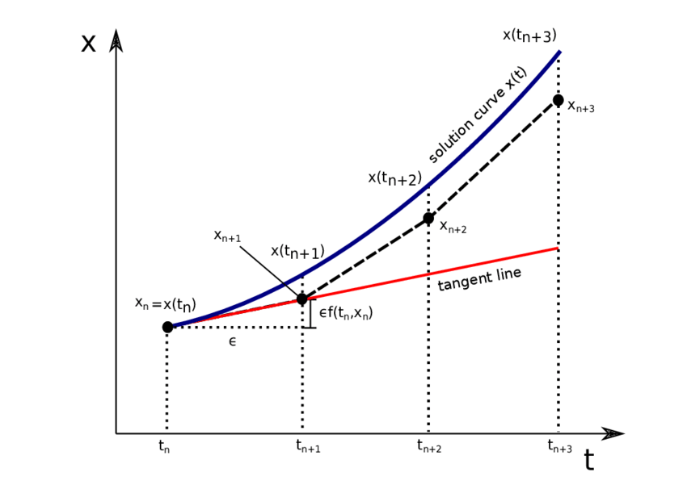

连续时间扩散模型——SDE与ODE描述
\[ \newcommand{\x}{\mathbf x} \newcommand{\z}{\mathbf z} \newcommand{\E}{\mathbb E} \newcommand{\f}{\mathbf f} \newcommand{\w}{\mathbf w} \newcommand{\calN}{\mathcal N} \newcommand{\pdata}{p_\text{data}} \]
Brief Introduction
我们已经用两篇文章从VAE到DDPM、Score-Based Generative Models 分别介绍了 DDPM (Denoising Diffusion Probabilistic Models) 和 SMLD (Score Matching + Langevin Dynamics)，并说明了它们的本质其实是相同的。进一步，论文[1]把它们扩展到了连续时间场景并使用随机微分方程（Stochastic Differential Equations, SDE）描述。在该视角下，DDPM 和 SMLD 是两个特殊形式 SDE 的离散化。DDPM / SMLD 的加噪过程对应 forward SDE，去噪过程对应 reverse SDE，解 reverse SDE 的过程就是生成过程。除了使用通用的 SDE 数值解法以外，作者根据问题特点提出了 Predictor-Corrector Samplers，统一并扩展了 DDPM / SMLD 的去噪过程。作者还构造了与 SDE 具有相同边缘分布的 ODE，从而得到确定性生成过程。
DDPM Recap
加噪过程（前向过程）
DDPM 将前向过程构建为一个离散马尔可夫链 \(\{\x_0,\x_1,\ldots,\x_N\}\)，转移概率为： \[ p(\x_i\vert \x_{i-1})=\calN\left(\x_i;\sqrt{1-\beta_i}\x_{i-1},\beta_i\mathbf I\right) \] 其中 \(0<\beta_1,\beta_2,\ldots,\beta_N<1\) 是每一步转移的正态分布的方差。上式等价写作： \[ \x_i=\sqrt{1-\beta_i}\x_{i-1}+\sqrt{\beta_i}\z_{i-1},\quad i=1,\ldots,N \tag{1}\label{ddpm} \] 在该转移概率下，我们有一个优秀的性质： \[ p_{\alpha_i}(\x_i\vert \x_0)=\calN\left(\x_{i};\sqrt{\bar\alpha_i}\x_0,(1-\bar\alpha_i)\mathbf I\right)\tag{2}\label{ddpm0} \] 其中 \(\bar\alpha_i=\prod_{j=1}^i(1-\beta_j)\).
去噪过程（逆向过程）
去噪过程是前向过程的逆向，若以 score function 为目标构建模型 \(s_\theta(\x_i,i)\)，则： \[ \begin{align} p_\theta(\x_{i-1}\vert\x_i)=\calN\left(\x_{i-1};\tfrac{1}{\sqrt{1-\beta_i}}(\x_i+\beta_is_\theta(\x_i,i)),\beta_i\mathbf I\right) \end{align} \] 或写作： \[ \x_{i-1}=\frac{1}{\sqrt{1-\beta_i}}(\x_i+\beta_i s_\theta(\x_i,i))+\sqrt{\beta_i}\z_i,\quad i=N,N-1,\ldots,1 \tag{3}\label{reverse-ddpm} \]
损失函数由 ELBO 推得： \[ \mathcal L=\sum_{i=1}^N(1-\alpha_i)\E_{\pdata(\x)}\left[\E_{p_{\alpha_i}(\tilde\x\vert \x)}\left[\left\|s_\theta(\tilde\x,i)-\nabla_{\tilde\x}\log p_{\alpha_i}(\tilde\x\vert\x)\right\|^2\right]\right] \]
SMLD Recap
加噪过程
与 DDPM 不同，SMLD 首先定义了从原数据到以 \(\sigma_i\) 加噪的变换： \[ p_{\sigma_i}(\x_i\vert \x_0)=\calN(\x_i;\x_0,\sigma_i^2\mathbf I)\tag{4}\label{smld0} \] 逆向思考，该分布可由如下相邻两个 noise scale 的转移得到： \[ p(\x_i\vert\x_{i-1})=\calN\left(\x_{i-1};\left(\sigma_i^2-\sigma_{i-1}^2\right)\mathbf I\right) \] 或写作： \[ \x_i=\x_{i-1}+\sqrt{\sigma_i^2-\sigma_{i-1}^2}\ \z_{i-1},\quad i=1,\ldots,N \tag{5}\label{smld} \]
去噪过程（Annealed Langevin Dynamics）
在每个 noise scale 加噪的数据分布上，执行 \(M\) 步 Langevin dynamics： \[ \x_i^m=\x_i^{m-1}+\epsilon_i s_\theta(\x_i^{m-1},\sigma_i)+\sqrt{2\epsilon_i}\ \z_i^m,\quad m=1,\ldots,M \] 其中 \(\epsilon_i\) 是步长相关参数。对 \(i=N,N-1\ldots,1\) 均执行上述过程。
损失函数由在每个 noise scale 上做 denoising score matching 推得： \[ \mathcal L=\sum_{i=1}^N \sigma_i^2\E_{\pdata(\x)}\left[\E_{p_{\sigma_i}(\tilde\x\vert\x)}\left[\left\|s_\theta(\tilde\x,\sigma_i)-\nabla_{\tilde\x}\log p_{\sigma_i}(\tilde\x\vert\x) \right\|^2\right]\right] \]
Forward SDE
DDPM 和 SMLD 都是在离散时间点扩散的，倘若将时间连续化，那么我们就能够得到对应的 SDE 表达。为了连续化，我们只需要将 \(\eqref{ddpm}\) 式和 \(\eqref{smld}\) 式写作差分形式，取 \(\Delta t\to0\)，即得到微分形式。
DDPM: VP SDE
为了方便叙述，定义 \(\bar\beta_i=N\beta_i\)，那么 \(\eqref{ddpm}\) 式改写作： \[ \x_i=\sqrt{1-\frac{\bar\beta_i}{N}}\ \x_{i-1}+\sqrt{\frac{\bar\beta_i}{N}}\ \mathbf z_{i-1},\quad i=1,\ldots,N \] 设 \(\beta(\frac{i}{N})=\bar\beta_i,\,\x(\frac{i}{N})=\x_i,\,\z(\frac{i}{N})=\z_i\)，那么对于 \(t=\left\{0,\frac{1}{N},\ldots,\frac{N-1}{N}\right\},\,\Delta t=\frac{1}{N}\)，上式可写作： \[ \x(t+\Delta t)=\sqrt{1-\beta(t+\Delta t)\Delta t}\ \x(t)+\sqrt{\beta(t+\Delta t)\Delta t}\ \z(t) \] 当 \(\Delta t\) 很小时，根据近似 \((1+x)^\alpha\approx 1+\alpha x\)，有： \[ \x(t+\Delta t)\approx\x(t)-\frac{1}{2}\beta(t+\Delta t)\Delta t\ \x(t)+\sqrt{\beta(t+\Delta t)\Delta t}\ \z(t) \] 因此，令 \(\Delta t\to 0\)，得到 ： \[ \mathrm d\x=-\frac{1}{2}\beta(t)\x\ \mathrm dt+\sqrt{\beta(t)}\ \mathrm d\w\tag{6}\label{vp-sde} \] 其中 \(\w\) 是标准维纳过程（也称作布朗运动）。
维纳过程（布朗运动）直观解释
考虑一个马尔可夫随机过程 \(\w\)，其以一年为时间单位，下一年相比这一年的变化量服从 \(\calN(\mathbf 0,\mathbf I)\)，即： \[\w(t+1)=\w(t)+\z(t),\quad \z(t)\sim\calN(\mathbf 0,\mathbf I)\] 那么两年后，总变化量就是两个正态随机变量之和，服从 \(\calN(\mathbf 0,2\mathbf I)\)： \[\w(t+2)=\w(t)+\sqrt{2}\ \z(t),\quad \z(t)\sim\calN(\mathbf 0,\mathbf I)\] 反过来想，一年的变化量是两个半年变化量之和，所以半年的变化量应该服从 \(\calN(\mathbf 0,0.5\ \mathbf I)\)： \[\w(t+0.5)=\w(t)+\sqrt{0.5}\ \z(t),\quad\z(t)\sim\calN(\mathbf 0,\mathbf I)\] 以此类推，如果考虑 \(\Delta t\) 的时间，变化量就应该服从 \(\calN(\mathbf 0,\Delta t\ \mathbf I)\)： \[\w(t+\Delta t)=\w(t)+\sqrt{\Delta t}\ \z(t),\quad\z(t)\sim \calN(\mathbf 0,\mathbf I)\] 令 \(\Delta t\to 0\)，则： \[\mathrm d\w=\lim_{\Delta t\to0}\sqrt{\Delta t}\ \z(t)\]
这就是 \(\eqref{vp-sde}\) 式后一项的由来。
论文作者称 \(\eqref{vp-sde}\) 式为 Variance Preserving (VP) SDE，因为当初始分布有单位方差时，该 SDE 描述的随机过程也始终有固定的方差。为了说明这点，作者直接给出了如下关于方差演进过程的 ODE： \[ \frac{\mathrm d\Sigma_\text{VP}(t)}{\mathrm dt}=\beta(t)(\mathbf I-\Sigma_\text{VP}(t)) \] 解得： \[ \Sigma_\text{VP}(t)=\mathbf I+e^{\int_0^t -\beta(s)\mathrm ds}(\Sigma_\text{VP}(0)-\mathbf I) \] 因此，当 \(\Sigma_\text{VP}(0)=\mathbf I\) 时，始终有 \(\Sigma_\text{VP}(t)=\mathbf I\). 另外，即便 \(\Sigma_\text{VP}(0)\neq\mathbf I\)，当 \(t\to\infty\) 时，\(e^{\int_{0}^t-\beta(s)\mathrm ds}\to0\)，也有 \(\Sigma_\text{VP}(t)\to\mathbf I\).
在上一篇文章的最后一节我们也对此做了解释——从 DDPM 的角度看，这无非就是说扩散过程最后会服从 \(\calN(\mathbf 0,\mathbf I)\).
什么？你问这个 ODE 怎么来的？我也不会啊……
SMLD: VE SDE
类似地，设 \(\sigma(\frac{i}{N})=\sigma_i,\,\x(\frac{i}{N})=\x_i,\,\z(\frac{i}{N})=\z_i\)，那么对于 \(t=\left\{0,\frac{1}{N},\ldots,\frac{N-1}{N}\right\},\,\Delta t=\frac{1}{N}\)，\(\eqref{smld}\) 式可写作： \[ \x(t+\Delta t)=\x(t)+\sqrt{\sigma^2(t+\Delta t)-\sigma^2(t)}\ \mathbf z(t) \] 当 \(\Delta t\) 很小时，根据一阶泰勒展开 \(f(t+\Delta t)\approx f(t)+\frac{\mathrm df(t)}{\mathrm dt}\Delta t\)，有： \[ \x(t+\Delta t)\approx\x(t)+\sqrt{\frac{\mathrm d[\sigma^2(t)]}{\mathrm dt}\Delta t}\ \z(t) \] 令 \(\Delta t\to 0\)，得到： \[ \mathrm d\x=\sqrt{\frac{\mathrm d[\sigma^2(t)]}{\mathrm dt}}\mathrm d\w \tag{7}\label{ve-sde} \] 该 SDE 被作者称为 Variance Exploding (VE) SDE，因为随着 \(t\to\infty\)，其描述的随机过程方差将无限制增大。
General Form
上文我们分别推导了 DDPM 和 SMLD 对应的 SDE 形式。更一般地，对于一个连续时间的扩散过程 \(\{\x(t)\}_{t=0}^T\)，其中 \(\x(0)\sim p_0\) 并且 \(\x(T)\sim p_T\)，即 \(p_0\) 表示数据分布，\(p_T\) 表示先验分布，我们可以用 Itô diffusion SDE 来描述这个扩散过程： \[ \mathrm d\x= \f(\x,t)\mathrm dt+g(t)\mathrm d\w \tag{8}\label{sde} \] 其中 \(\f(\x,t):\mathbb R^d\to\mathbb R^d\) 是一个向量值函数，称作 drift coefficient；\(g(t):\mathbb R\to\mathbb R\) 是一个标量函数，称作 diffusion coefficient. 特别地，对于 DDPM 而言，\(\f(\x,t)=-\frac{1}{2}\beta(t)\x,\ g(t)=\sqrt{\beta(t)}\)；对于 SMLD 而言，\(\f(\x,t)=\mathbf 0,\ g(t)=\sqrt{\frac{\mathrm d[\sigma^2(t)]}{\mathrm dt}}\). 因此我们在引言里说，DDPM 和 SMLD 分别是两个特殊形式 SDE 的离散化。
Reverse SDE
同 DDPM 类似，forward SDE 将数据 \(\x(0)\sim p_0\) 变换为了先验分布 \(\x(T)\sim p_T\)，而 reverse SDE 将该过程逆向，即可得到生成模型。
记 \(p_t(\x)\) 为 \(\x(t)\) 的概率分布，\(p_{st}(\x(t)\vert\x(s))\) 为从 \(\x(s)\) 到 \(\x(t)\) 的转移概率分布。对于 \(\eqref{sde}\) 式，根据论文[9]的结论，其 reverse-time SDE 为： \[ \mathrm d\x=\left[\f(\x,t)-g^2(t)\nabla_\x\log p_t(\x)\right]\mathrm dt+g(t)\mathrm d\bar\w \tag{9}\label{reverse-sde} \] 其中 \(\bar\w\) 是一个标准维纳过程（布朗运动）。
我们又看到了老朋友 score function \(\nabla_\x\log p_t(\x)\)，依旧使用 denoising score matching 来训练模型： \[ \E_t\left[\lambda(t)\E_{\x(0)}\E_{\x(t)\vert\x(0)}\left[\left\|s_\theta(\x(t),t)-\nabla_{\x(t)}\log p_{0t}(\x(t)\vert\x(0)) \right\|_2^2\right]\right] \tag{10}\label{loss} \] 其中 \(\lambda:[0,T]\to \mathbb R_{>0}\) 是加权系数。与 DDPM / SMLD 类似，可以选取 \(\lambda(t)\propto1/\E[\Vert\nabla_{\x(t)}\log p_{0t}(\x(t)\vert\x(0)) \Vert^2]\).
在训练好模型之后，用模型替换 \(\eqref{reverse-sde}\) 式中的 score function 即可： \[ \mathrm d\x=\left[\f(\x,t)-g^2(t)s_\theta(\x,t)\right]\mathrm dt+g(t)\mathrm d\bar\w \tag{9'}\label{reverse-sde-est} \]
Solving the Reverse SDE
为了生成数据，我们随机采样 \(\x(T)\sim p_T\)，通过求解 \(\eqref{reverse-sde-est}\) 式得到 \(\x(0)\). 作者首先指出，我们可以使用常见的通用数值求解方法解该 SDE；随后考虑到问题的特殊性，提出了 Predictor-Corrector 方法提高性能。
Numerical SDE Solvers
存在一些广泛适用的 SDE 数值解法，例如 Euler-Maruyama 和 stochastic Runge-Kutta，它们分别是求解 ODE 的 Euler 法和 Runge-Kutta 法在 SDE 上的扩展。
Euler 法回顾（摘自《计算方法》课程笔记）
对于初值问题： \[\begin{cases}\frac{\mathrm dy}{\mathrm dx}=f(x,y)&&a\leq x\leq b\\y(a)=\eta\end{cases}\] 数值求解方法是指：取定步长 \(h\)，在一系列点 \(\{x_0=a,\,x_1=a+h,\,x_2=a+2h,\,\ldots\}\) 上求 \(y_i=y(x_i)\).
Euler 法是最简单的数值求解方法之一。考虑在 \([x_n,x_{n+1}]\) 上对 \(y'(x)=f(x,y(x))\) 积分，有： \[\begin{align}y(x_{n+1})&=y(x_n)+\int_{x_n}^{x_{n+1}}f(x,y(x))\mathrm d x\\&\approx y(x_n)+ hf(x_n,y(x_n))&&\text{左矩形近似积分}\\&=y_n+ hf(x_n,y_n)\end{align}\] 以此公式迭代求解即可。若做出图来，\(y_i\) 其实就是不断沿当前导数方向走折线，因此也称作 Euler 折线法。

如果用更准确的梯形公式而非矩形来近似积分，可得： \[y_{n+1}=y_n+\frac{h}{2}[f(x_n,y_n)+f(x_{n+1},y_{n+1})]\] 但这是关于 \(y_{n+1}\) 的隐格式，无法直接求解。故一般先使用 Euler 折线法求出一个初始值，再依梯形公式迭代。
特别地，如果只迭代一次，称作改进 Euler 法： \[\begin{cases}y_{n+1}^{(0)}=y_n+h f(x_n,y_n)\\y_{n+1}=y_{n+1}^{(0)}+\frac{h}{2}\left[f(x_n,y_n)+f\left(x_{n+1},y_{n+1}^{(0)}\right)\right]\end{cases}\]
Runge-Kutta 法回顾（摘自《计算方法）课程笔记）
理论上，\(y(x_{n+1})\) 和 \(y(x_n)\) 的差距由泰勒展开给出： \[y(x_{n+1})=y(x_n)+h y'(x_n)+\frac{h^2}{2!}y''(x_n)+\cdots\] 如果允许，我们可以截断到任意精度，让解更加准确。Euler 法只有 \(h f(x_n,y_n)\) 一项，其实是截断到一阶；利用泰勒展开可以证明，改进 Euler 法截断到了二阶。然而直接计算高阶导数非常麻烦，Runge-Kutta 法提供了一种巧妙的构造，间接地利用了这种思想。
我们可以将 Euler 法写作： \[\begin{cases}y_{n+1}=y_n+h K_1\\K_1=f(x_n,y_n)\end{cases}\] 改进 Euler 法写作： \[\begin{cases}y_{n+1}=y_n+\frac{1}{2}hK_1+\frac{1}{2}hK_2\\K_1=f(x_n,y_n)\\K_2=f(x_n+h,y_n+hK_1)\end{cases}\] 以此类推，\(s\) 阶 R-K 法写作： \[\begin{cases}y_{n+1}=y_n+h\sum_{i=1}^s R_iK_i\\K_1=f(x_n,y_n)\\K_i=f(x_n+a_ih,y_n+h\sum_{j=1}^{i-1}b_{ij}K_j),&&i=2,3,\ldots,s\end{cases}\] 其中 \(R_i,\,a_i,\,b_{ij}\) 为参数，以使得 \(y(x_{n+1})-y_{n+1}\) 泰勒展开后 \(h^i\) 系数为 \(0\) (\(i=1,2,\ldots,s\))，即截断到 \(s\) 阶。
Euler-Maruyama 法和 Euler 法类似，只需要从初值开始，选定步长反复迭代即可。具体而言，对于 \(\eqref{reverse-sde-est}\) 式，选择一个小步长 \(\Delta t\approx 0\)，初始化 \(t\gets T\)，然后迭代执行下述过程直至 \(t\approx 0\)： \[ \begin{align} \Delta \mathbf{x} &\gets \left[\mathbf{f}(\mathbf{x}, t) - g^2(t) \mathbf{s}_\theta(\mathbf{x}, t)\right]\Delta t + g(t) \sqrt{\vert \Delta t\vert }\mathbf{z}_t ,&&\z_t\sim \calN(\mathbf 0,\mathbf I)\\ \mathbf{x} &\gets \mathbf{x} + \Delta \mathbf{x}\\ t &\gets t + \Delta t \end{align} \]
Reverse Diffusion Samplers
除了使用 Euler-Maruyama 等通用 SDE solver 以外，我们还有其他求解 reverse SDE \(\eqref{reverse-sde-est}\) 式的做法吗？在第二节中，我们将前向过程连续化得到 forward SDE，那反过来，把 reverse SDE 离散化不就得到逆向过程了吗？ \[ \begin{align} &\mathrm d\x=\left[\f(\x,t)-g^2(t)s_\theta(\x,t)\right]\mathrm dt+g(t)\mathrm d\bar\w \tag{9'}\\ &\text{(discretization) }\Bigg\Downarrow\\ &\x_i=\x_{i+1}-\f_{i+1}(\x_{i+1})+g_{i+1}^2 s_\theta(\x_{i+1},i+1)+g_{i+1}\z_{i+1} \tag{10}\label{reverse-diffusion} \end{align} \] 作者将这种方法称作 reverse diffusion samplers.
Predictor-Corrector Samplers
与一般的 SDE 不同的是，我们现在有一个 score-based model \(s_\theta(\x,t)\approx\nabla_\x\log p_t(\x)\)，可以利用 score-based MCMC 方法来改进通用 SDE solvers 的解。具体而言，每一步首先由通用 SDE solvers 给出一个解（predictor），然后由 MCMC 方法来修正解的分布（corrector），因此作者称该方法为 Predictor-Corrector (PC) samplers. 特别地，DDPM 相当于用 ancestral sampling 作为 predictor、identity function 作为 corrector；而 SMLD 相当于用 identity function 作为 predictor、Langevin dynamics 作为 corrector.
Probability Flow ODE
上文中，我们已经构建了连续时间扩散模型的 SDE 描述。宋飏等人提出，对于任一 SDE 描述的扩散过程，都存在一个 ODE 描述的确定性过程与之有相同的边缘分布 \(\{p_t(\x)\}_{t=0}^T\). 具体地，\(\eqref{reverse-sde}\) 式对应的 ODE 为： \[ \mathrm d\x=\left[\f(\x,t)-\frac{1}{2}g^2(t)\nabla_\x\log p_t(\x)\right]\mathrm dt \tag{11}\label{reverse-ode} \] 同上一节类似，我们可以用常用的 RK45 来解上式，也可以将其离散化为 \(\x_{i}=\x_{i+1}-\f_{i+1}(\x_{i+1})+\frac{1}{2}g_{i+1}^2s_\theta(\x_{i+1},i+1)\) 求解，predictor-corrector samplers 的思想也依然适用。但是作者指出，尽管解 ODE 比解 SDE 更快，其生成图片的质量往往不如 SDE.
References
- Song, Yang, Jascha Sohl-Dickstein, Diederik P. Kingma, Abhishek Kumar, Stefano Ermon, and Ben Poole. Score-Based Generative Modeling through Stochastic Differential Equations. In International Conference on Learning Representations. 2020. ↩︎
- Yang Song. Generative Modeling by Estimating Gradients of the Data Distribution. https://yang-song.net/blog/2021/score/ ↩︎
- 扩散模型与能量模型，Score-Matching和SDE，ODE的关系 - 中森的文章 - 知乎 https://zhuanlan.zhihu.com/p/576779879 ↩︎
- 苏剑林. (Aug. 03, 2022). 《生成扩散模型漫谈（五）：一般框架之SDE篇 》[Blog post]. Retrieved from https://kexue.fm/archives/9209 ↩︎
- 苏剑林. (Aug. 08, 2022). 《生成扩散模型漫谈（六）：一般框架之ODE篇 》[Blog post]. Retrieved from https://kexue.fm/archives/9228 ↩︎
- Wiener Process and Ito's Lemma - 无情小超超的文章 - 知乎 https://zhuanlan.zhihu.com/p/148808235 ↩︎
- Score-based Generative Models总结 - o00O00o的文章 - 知乎 https://zhuanlan.zhihu.com/p/583666759 ↩︎
- Tanmaya Shekhar Dabral. Stochastic Differential Equations and Diffusion Models. https://www.vanillabug.com/posts/sde/ ↩︎
- Anderson, Brian DO. Reverse-time diffusion equation models. Stochastic Processes and their Applications 12, no. 3 (1982): 313-326. ↩︎